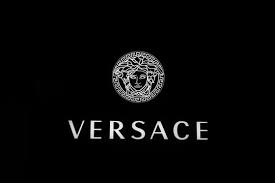

Versace
Fundada em 1978 por Gianni Versace, a Versace surgiu com uma nova proposta na moda que desafiava
os limites estéticos. A grife da medusa ficou conhecida por sua provocação visual incomparável sem
sacrificar o conforto da silhueta ou a fluidez dos materiais. Desde sua concepção, a etiqueta italiana
se tornou sinônimo de extravagância
e sensualidade, transcendeu gerações e permanece como uma referência no mercado de luxo.

disponível em: https://blog.etiquetaunica.com.br/versace-conheca-a-historia-da-marca-extravagante/